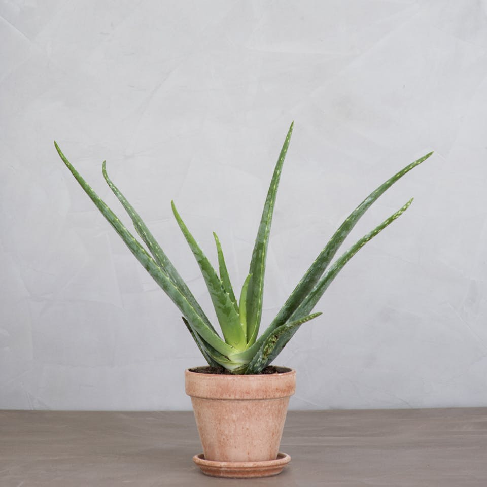

Dig & din planter

Nemme planter til din stue
Vil du gerne have nogle planter i dit hjem, som både er dekorative og nemme at passe? Så læs her, hvor Plante Magasinet har udvalgt fire nemme stueplanter.
Af Jenny Mae Maglaque Berces
Monsteraen er blevet kendt de seneste par år under navnet ‘blogger-planten', da den er blevet fast inventar i alle Instagram-hjem. Og det med god grund, for plantens smukke og skulpturelle blade klæder alle rum. Monsteraen skal ikke stå i direkte sol og vandes cirka en til to gange ugentligt. Er du lidt glemsom, så er monsteraen god til selv at vise, hvornår den trænger til vand.
Pilea er også kendt som ‘penge-planten’, da de runde og flade blade minder om mønter. Pileaen er en lille stueplante, der passer perfekt til kontoret eller spisebordet. Har du lidt grønne fingre, kan du sagtens få pileaen til at spirre og give nye planter til samlingen. Pileaen trives bedst uden direkte sollys og skal vandes cirka en til to gange om ugen.
Kaktusser er både smukke og moderne. Den blå søjlekaktus er en vertikal plante, der tilføjer højde til rummet og kan passe til selv de mest minimalistiske hjem. Kaktussen skal kun vandes, når jorden er fuldstændig tør, og stå i så direkte sollys som muligt.

Aloe veraen er en mindre stueplante, der kan pryde de fleste rum med sit markante udseende. Planten trives bedst på en lys placering uden direkte sollys, og skal vandes en til to gange om ugen.